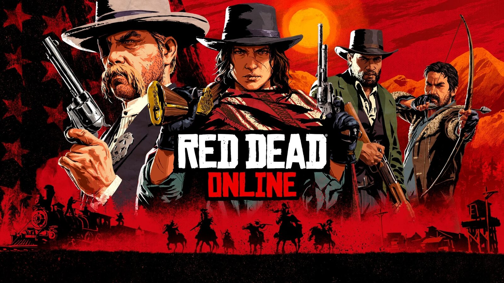

Actus · Analyse DLC gratuit RDR2 en juillet : ce que Rockstar a vraiment annoncé Le 1er juillet 2026, Rockstar a lancé sur Red Dead Online un événement intitulé Bounty Hunter Bonuses. Plusieurs sites l'ont présenté comme un DLC gratuit pour Red Dead Redemption 2. L'événement n'ajoute aucune mission et aucun mode de jeu. Voici son contenu exact, ce qu'en a dit la presse, et ce que Rockstar écrit sur Red Dead Online depuis 2022. 16 juillet 2026 Par Joseph Lambert 6 min de lecture  Le communiqué publié par Rockstar sur son Newswire s'intitule « Band Together to Take Down Criminals and Earn Bounty Hunter Bonuses ». L'événement se tient du 1er juillet au 3 août 2026. Rockstar le résume en une phrase : « Bring dangerous criminals across the frontier to heel and earn 3X RDO$, XP, and Role XP dragging in Regular Bounties, and 3X RDO$, XP, and Gold hauling in Legendary and Infamous Bounties. » Le contenu exact de l'événement Le détail, tel que publié par Rockstar et relayé par RockstarINTEL le 30 juin 2026 : Les primes classiques rapportent 3X RDO$, XP et XP de rôle. Les primes légendaires et infâmes rapportent 3X RDO$, XP et or. Les événements de free roam Day of Reckoning et Manhunt rapportent 3X RDO$ et XP. L'XP de posse est doublée et les frais de création d'une posse permanente sont offerts. Le Bounty Hunter Wagon est gratuit. Les licences de chasseur de primes coûtent 5 lingots d'or de moins. Les teintes, tenues et armes associées sont à moitié prix. Les récompenses du mois comprennent l'emote Seek Trouble, l'Orange Raccoon Skin Hat et un bon d'arme gratuit. Les récompenses hebdomadaires comprennent les Hawkmoth Bolas, l'Eberhart Coat, la carte au trésor de West Hill Haven et le Raccoon Hat. Se connecter en juillet donne le Rebellion Poncho. Les joueurs ayant le rôle de chasseur de primes reçoivent le bandana Spirit of 1776. Aucune de ces activités n'est nouvelle. Le rôle de chasseur de primes est apparu le 10 septembre 2019 avec la mise à jour Frontier Pursuits, en même temps que les rôles de marchand et de collectionneur. L'événement modifie des multiplicateurs de gains et des prix sur du contenu déjà en place. Il n'ajoute ni mission, ni mode, ni région, ni rôle. Ce qu'en a fait la presse ScreenRant a titré « Red Dead Redemption 2 Free DLC For July Officially Announced » le 1er juillet 2026. Le 10 juillet, le même site a publié « Red Dead Redemption 2 Is Officially Getting New Content In 2026 ». Ce second article ne cite aucun contenu nouveau. Sa seule projection est que « with Rockstar expected to launch Grand Theft Auto VI later this year, its attention may soon return to the Red Dead franchise ». ScreenRant a employé le mot DLC pour chacun des événements mensuels de Red Dead Online en 2026, en janvier, février, mars, avril, mai et juin. CBR a titré « Red Dead Redemption 2 DLC Officially 100% Free for March 2026 » au mois de mars. Rockstar emploie le mot « Bonuses ». Le communiqué ne contient ni le mot « DLC », ni l'expression « new content ». GameRant a couvert le même événement le 30 juin 2026 sous le titre « New Red Dead Online Bonuses Are Live Now », en rappelant que Rockstar a réduit le suivi du jeu en 2022. Le Rebellion Poncho revient chaque été Le Rebellion Poncho est offert aux joueurs qui se connectent en juillet 2026. Il l'était déjà en juillet 2025, et en juillet 2024. Worthplaying écrivait le 2 juillet 2024 : « Log in between July 2 – 8 to receive the Rebellion Poncho for free. » L'objet lui-même est plus ancien. Il provient de l'Outlaw Pass n°2, au rang 96, et Madame Nazar le vend 385 $. C'est un cosmétique aux couleurs de la fête nationale américaine que Rockstar remet en circulation chaque été. Ce que Rockstar a écrit en juillet 2022 Le 7 juillet 2022, Rockstar publiait sur son Newswire un texte intitulé « Grand Theft Auto and Red Dead Online Community Update ». Au sujet de l'avenir de Red Dead Online, on y lit : « we plan to build upon existing modes and add new Telegram Missions this year, rather than delivering major themed content updates like in previous years ». Soit : de nouvelles missions Telegram, à la place des grosses mises à jour thématiques des années précédentes. Sur ses raisons, le studio écrit : « Over the past few years, we have been steadily moving more development resources towards the next entry in the Grand Theft Auto series ». Rockstar parle du « prochain épisode de la série Grand Theft Auto ». Le sigle GTA 6 n'apparaît pas. Kotaku a titré, le 7 juillet 2022, « Rockstar: No Major Updates Coming For Red Dead Online ». VGC a titré le 8 juillet « Rockstar says major Red Dead Online updates will stop as it focuses on GTA 6 ». La phrase de Rockstar écarte une seule catégorie, les « major themed content updates », et se limite à l'année en cours. Nous avions couvert l'annonce en juillet 2022. Ce que Red Dead Online a reçu depuis Rockstar annonçait des missions Telegram plutôt que des mises à jour thématiques. C'est ce qui s'est passé. Le relevé depuis juillet 2022 : 6 septembre 2022. Trois missions Telegram hardcore, regroupées sous le nom Skelding's Contract, et de nouvelles variantes des missions Rich Pickings et Outrider. 18 octobre 2022. Une mission Telegram hardcore d'Halloween, False Hopes & Prophecy. Août 2023. Trois missions Telegram : Hostage to Fortune, The Bell Tolls et Trial & Tribulation. Octobre 2024. Trois missions Telegram de garde du corps, pour Halloween. 1er juillet 2025. Strange Tales of the West Vol. 1, quatre missions Telegram construites autour de Theodore Levin, personnage du mode histoire de RDR2. Référencé comme mise à jour 1.32. Aucun rôle, mode ou territoire inédit n'est sorti depuis juillet 2022. Le dernier contenu en date reste les missions de juillet 2025. Aucune nouvelle mission n'a été identifiée en 2026. Le mode histoire de Red Dead Redemption 2 n'a rien reçu depuis sa sortie, le 26 octobre 2018. Ce que ça dit de RDR3 Rockstar n'a pas annoncé Red Dead Redemption 3. L'événement de juillet 2026 porte sur Red Dead Online et ne fait référence à aucun futur épisode. L'article de ScreenRant du 10 juillet relie les deux par une attente, pas par une annonce : l'attention de Rockstar « may soon return to the Red Dead franchise » une fois Grand Theft Auto VI sorti. Les chiffres de Take-Two placent Red Dead Redemption 2 au-delà de 70 millions d'exemplaires en février 2025. Rockstar n'a fait aucune déclaration publique reliant ces ventes à un troisième épisode.